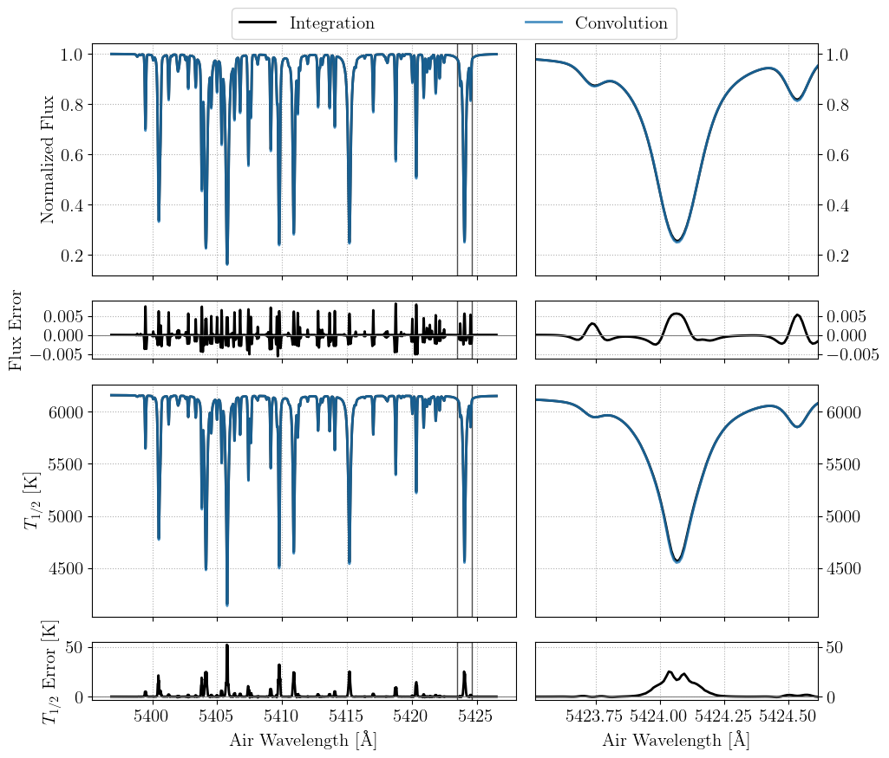
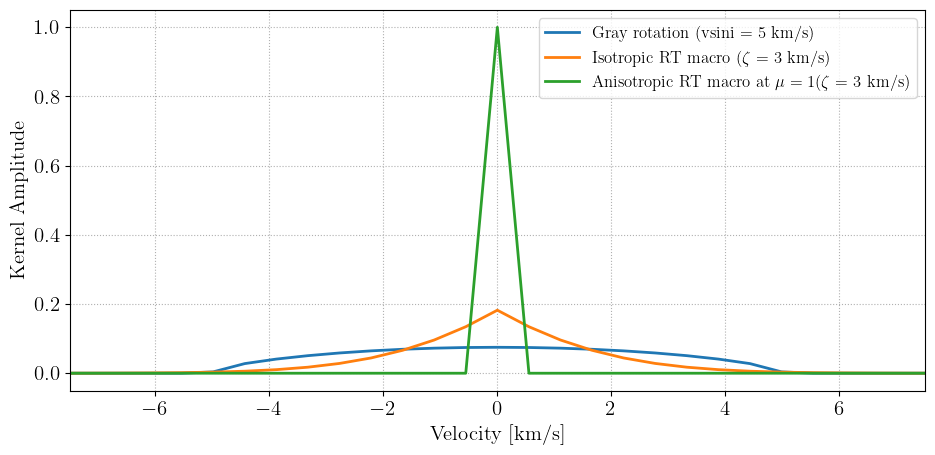
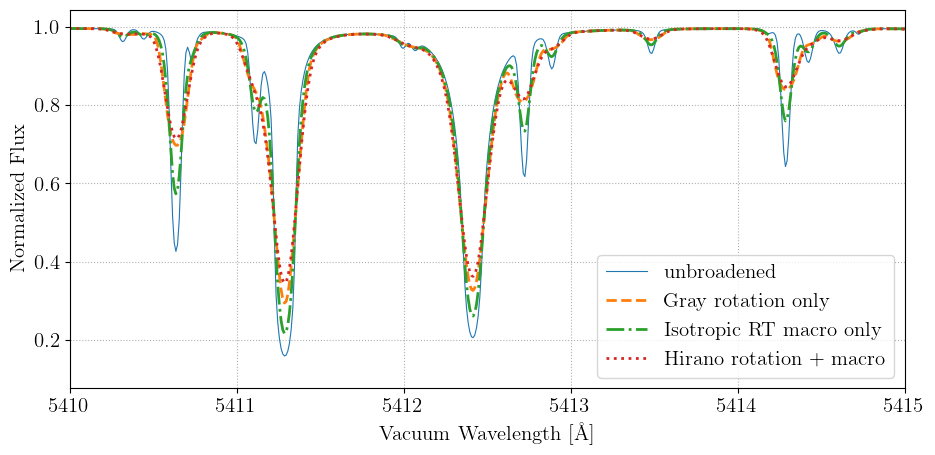
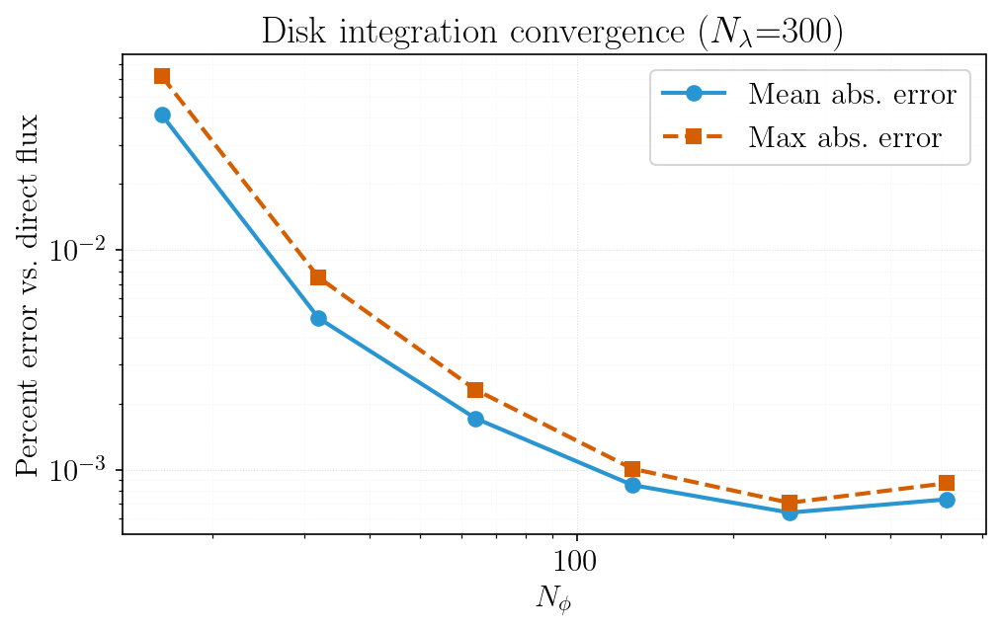

Broadening & Convolutions
FormationTemps.jl exposes the broadening kernels and convolution routines it uses internally so they can be applied directly to any spectrum. This page demonstrates each option and compares the convolution approximation to full disk integration.
See the Public Functions page for full API documentation on each function.
Disk integration vs. convolution approximation
By default calc_formation_temp performs a numerical disk integration over the stellar surface. Passing convolve=true instead applies the Hirano et al. (2011) combined rotation + macroturbulence kernel in the Fourier domain. This is much faster, but ultimately an approximation. The code below shows both modes and their difference:
# --- compare disk integration vs. convolution approximation ---
# disk integration (default, convolve=false)
star_props = FT.StellarProps(Teff=Teff, logg=logg, Fe_H=Fe_H,
vsini=vsini, v_macro=ζ_RT, v_micro=ξ)
result_int = FT.calc_formation_temp(star_props, linelist; Δλ=0.01, convolve=false)
# convolution approximation (convolve=true uses Hirano et al. 2011 kernel;
# u1 and u2 are linear and quadratic limb-darkening coefficients)
u1 = 0.43
u2 = 0.31
result_conv = FT.calc_formation_temp(star_props, linelist; Δλ=0.01, convolve=true, u1=u1, u2=u2)
fig, (ax1, ax2) = plt.subplots(2, 1, figsize=(9.6, 7.2), sharex=true)
ax1.plot(wavs, result_int.flux, label="{\\rm integration}", lw=2.0, c="k")
ax1.plot(wavs, result_conv.flux, label="{\\rm convolution}", lw=2.0, ls="--")
ax1.set_ylabel("{\\rm Normalized Flux}")
ax1.legend()
ax2.plot(wavs, result_int.flux .- result_conv.flux, c="k", lw=0.8)
ax2.axhline(0, ls=":", c="gray")
ax2.set_xlabel("{\\rm Vacuum Wavelength [\\AA]}")
ax2.set_ylabel("{\\rm Integration} \$-\$ {\\rm Convolution}")
ax2.set_xlim(5410, 5415)
fig.tight_layout()
fname = joinpath(FT.moddir, "docs", "src", "static", "convolution_vs_integration.png")
fig.savefig(fname, bbox_inches="tight")
plt.show()
plt.clf(); plt.close()

Broadening kernels
Three macroturbulence kernels are available. The Gray rotation kernel handles rotational broadening only; the isotropic and anisotropic radial-tangential (RT) kernels handle macroturbulent broadening. The Hirano kernel (used with convolve=true) combines rotation and RT macro in a single Fourier-domain operation.
# --- compare the broadening kernels directly ---
# build a velocity grid for kernel visualization
Δλ = wavs[2] - wavs[1]
λ0 = wavs[length(wavs) ÷ 2 + 1]
Δv = FT.c_ms * Δλ / λ0
vs = collect((-length(wavs)÷2 : length(wavs)÷2 - 1)) .* Δv
# evaluate the three macroturbulence kernels at disk center (μ=1)
k_gray_rot = FT.gray_rot_kernel(vs, vsini, u1)
k_iso = FT.gray_iso_rt_macro_kernel(vs, ζ_RT)
k_rt = FT.rt_macro_kernel(vs, ζ_RT, 1.0)
fig, ax1 = plt.subplots(figsize=(9.6, 4.8))
ax1.plot(vs ./ 1e3, k_gray_rot, lw=2.0, label="{\\rm Gray rotation (vsini = $(round(Int, vsini/1e3)) km/s)}")
ax1.plot(vs ./ 1e3, k_iso, lw=2.0, label="{\\rm Isotropic RT macro (}\$\\zeta\$ {\\rm = $(round(Int, ζ_RT/1e3)) km/s)}")
ax1.plot(vs ./ 1e3, k_rt, lw=2.0, label="{\\rm Anisotropic RT macro at }\$\\mu=1\${\\rm (}\$\\zeta\$ {\\rm = $(round(Int, ζ_RT/1e3)) km/s)}")
ax1.set_xlabel("{\\rm Velocity [km/s]}")
ax1.set_ylabel("{\\rm Kernel Amplitude}")
ax1.set_xlim(-1.5*max(vsini, ζ_RT)/1e3, 1.5*max(vsini, ζ_RT)/1e3)
ax1.legend(fontsize=12)
fig.tight_layout()
fname = joinpath(FT.moddir, "docs", "src", "static", "broadening_kernels.png")
fig.savefig(fname, bbox_inches="tight")
plt.show()
plt.clf(); plt.close()

Applying convolutions to a spectrum
Each kernel has a matching convolve_* function that accepts a wavelength grid and spectrum vector (or matrix):
# --- apply the convolution functions to the base spectrum ---
flux_gray_rot = FT.convolve_gray_rotation(wavs, flux_base, vsini, u1)
flux_iso = FT.convolve_iso_rt_macro(wavs, flux_base, ζ_RT)
flux_hirano = FT.convolve_hirano_rotmacro(wavs, flux_base, vsini, ζ_RT, u1, u2)
fig, ax1 = plt.subplots(figsize=(9.6, 4.8))
ax1.plot(wavs, flux_base, label="{\\rm Unbroadened}", lw=0.8)
ax1.plot(wavs, flux_gray_rot, label="{\\rm Gray rotation only}", lw=2.0, ls="--")
ax1.plot(wavs, flux_iso, label="{\\rm Isotropic RT macro only}", lw=2.0, ls="-.")
ax1.plot(wavs, flux_hirano, label="{\\rm Hirano rotation + macro}", lw=2.0, ls=":")
ax1.set_xlim(5410, 5415)
ax1.set_xlabel("{\\rm Vacuum Wavelength [\\AA]}")
ax1.set_ylabel("{\\rm Normalized Flux}")
ax1.legend()
fig.tight_layout()
fname = joinpath(FT.moddir, "docs", "src", "static", "broadened_spectra.png")
fig.savefig(fname, bbox_inches="tight")
plt.show()
plt.clf(); plt.close()

Disk integration convergence
The numerical disk integration approximates the stellar surface with an $N_\phi \times 2N_\phi$ grid of tiles. The plot below shows how the integrated flux converges toward the direct (no-integration) reference as the grid resolution increases. Both the mean and maximum absolute percent error across all wavelength bins are shown.

At $N_\phi = 128$ (the default), the mean error is well below 1% and the maximum error is on the order of a few tenths of a percent. Doubling to $N_\phi = 256$ or $512$ reduces the error further but with diminishing returns and quadratically increasing cost (since the number of visible tiles scales as $\sim N_\phi^2$). For most applications $N_\phi = 128$ provides a good balance between accuracy and runtime.